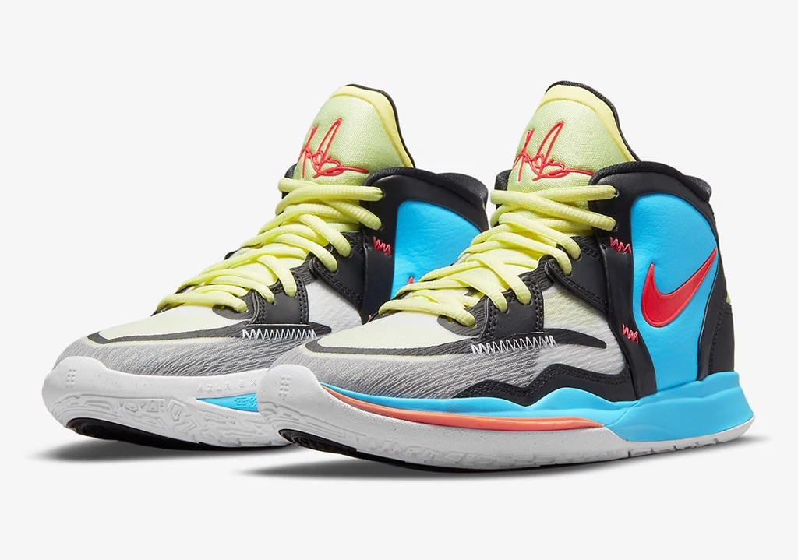
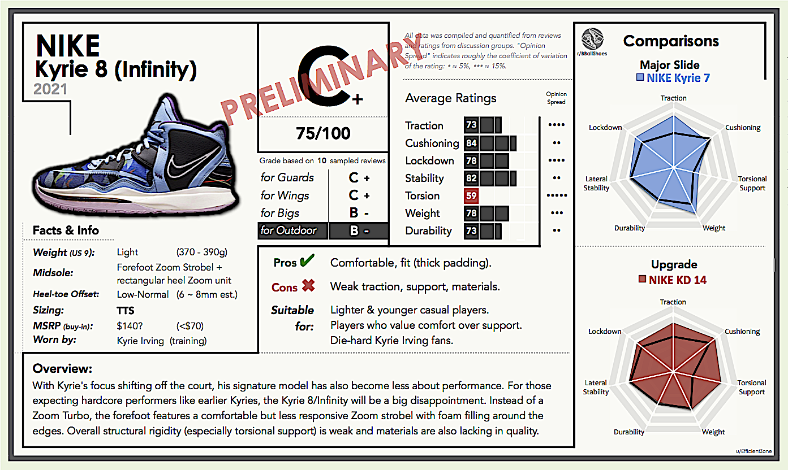

Kirie 8

Dòng giày bóng rổ signature của Kyrie Irving đã và đang dần trở thành một trong những đôi giày bóng rổ đáng
tin cậy nhất cho những người hậu vệ có lối chơi tinh quái. Được thiết kế dành riêng cho lối chơi, phong cách
sáng tạo và không thể đoán trước của Irving trên sân, Nike Kyrie 6 tập trung vào sự kiểm soát và độ thoải
mái cho bàn chân.
Giày bóng rổ Nike Kyrie 6 tự hào có bộ đệm Nike Air Zoom Turbo cung cấp khả năng phản hồi đáng kinh ngạc,
một dây đeo chéo giúp điều chỉnh độ vừa vặn, cổ giày với những miếng đệm lớn, và bộ đệm gót chân giữ cho mắt
cá chân luôn chắc chắn và thẳng hàng với phần còn lại của bàn chân. Điều hoàn thiện đôi giày này có lẽ chính
là mô hình traction với khả năng bám dính tất cả các góc, được kéo dài lên gần như bao trọn miếng đệm, cung
cấp độ bám sàn tuyệt vời theo mọi hướng.

GIÁ THÀNH: 2.500.000 VND